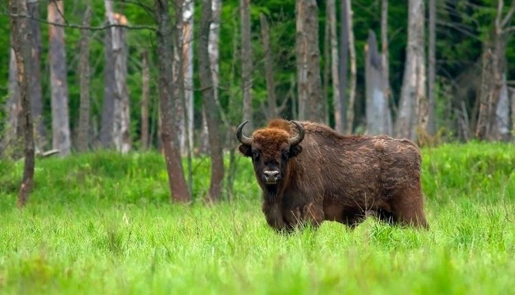

Nasze realizacje

Bezpieczne przegonienie stada żubrów z obszaru rekreacyjnego w Puszczy Białowieskiej.
Ochrona gospodarstwa rolnego przed migracją żubrów w regionie podlaskim.

Monitoring populacji żubrów na terenach górskich w Bieszczadach.